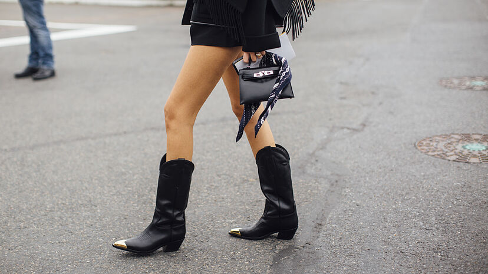
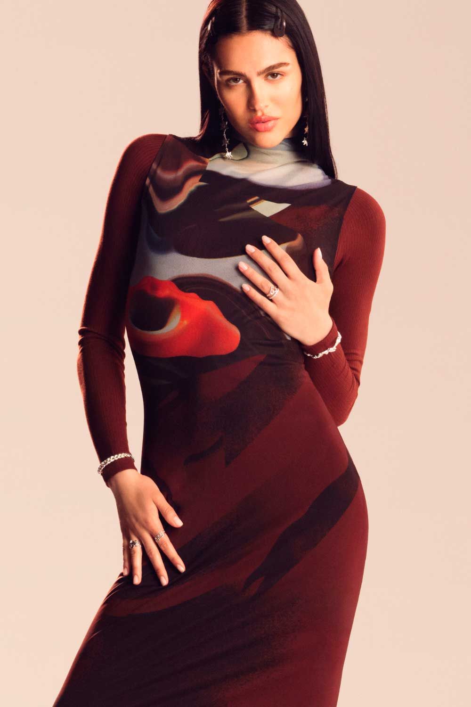
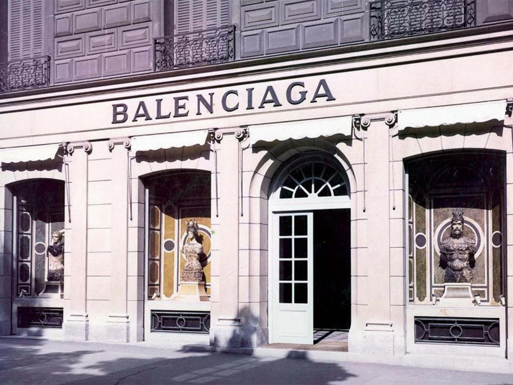

MODA
Enteráte de lo último en modas y tendencias

Botas que serán tendencia en el otoño 2024
El verano aún no ha acabado -ni queremos que lo haga- pero si hay algo que motiva a cualquier amante de la moda a coger con ganas el otoño, es conocer las tendencias que llegan con la nueva temporada. Y si hablamos del calzado estrella, tanto de los meses de otoño como de inviernos, son sin duda, las botas. Un imprescindible para los días de frío y disponibles en infinidad de modelos y diseños. Por eso, hemos hecho una recopilación de los modelos que arrasarán con la llegada del otoño invierno 2024/2025. Entre las botas que más se usarán este otoño serán las animal print, estilo bohemio, botas blancas, botas de calentador, botas xl y botas de colores llamativos.
Desigual y su campaña más rompedora: un guiño a los 'reality shows' con Amelia Gray como protagonista
Si algo caracteriza a la firma Desigual es su actitud irreverente. Es por eso, que no se nos ocurre una candidata mejor para su última campaña que Amelia Gray. La supermodelo es la cara visible de la colección otoño invierno 2024. Amelia Gray está en boca de todos por su trabajo como modelo y también por su derroche de personalidad en redes sociales. Con su presencia impactante y talento innegable, la joven de 23 años ha atraído una atención significativa desde que debutó en 2018. Además de eso, su progenitora, es una de las estrellas del programa 'Real Housewives of Beverly Hills'. ¿Y esto qué importa, te preguntarás? Pues todo. La participación de Amelia añade una capa extra de autenticidad a la campaña, difuminando las líneas entre la realidad y la fantasía. Ya que la inspiración de esta producción está basada en los 'reality shows'.
La campaña mezcla con maestría moda y cultura pop, haciendo referencias irónicas y desenfadadas al mundo de los 'reality' a la vez que rindiendo homenaje a su impacto innegable en la cultura y en la moda contemporáneas. Esta campaña fusiona dos universos. Por una parte, una sesión de fotos en estudio con Gray posando con una actitud de superestrella que incluye elementos clásicos de los programas televisivos, como los focos de iluminación, micrófonos de pérgola, una cámara VHS y una televisión, para darle ese toque noventero. Por otra parte, una casa de lujo que sirve para añadir contexto y elevar el concepto. La modelo paseando por su mansión en un patinete eléctrico, jugando videojuegos en la oscuridad mientras come palomitas o posando con su colección interminable de bolsos. Amelia Gray ha crecido en el ojo público, su visión y estilo únicos dan credibilidad a la hora de encarnar la temática principal. Desde su actitud relajada hasta su alegre sonrisa, Gray es la chica del momento.
Balenciaga abre una nueva tienda en la Milla de Oro de Madrid: dos plantas, diseño único y concepto industrial
Balenciaga ha decidido abrirse hueco en la Milla de Oro junto a otras boutiques de lujo como Dior, Gucci, Louis Vuitton, Prada, Chanel y Hermès, entre otras, algo que sin duda ha causado sensación entre los compradores usuales de la firma en Madrid. La nueva tienda es mucho más que una tienda. Distribuida en dos niveles, el nuevo espacio de 394 metros cuadrados, ofrece las últimas novedades 'ready-to-wear' tanto de hombre como de mujer; ropa, calzado, bolsos, accesorios, gafas de sol y joyería. El diseño del local es lo que realmente refleja el ADN tan único y rompedor de la firma, con un aspecto de estilo industrial, el concepto de acabados vírgenes que se funden en un equilibrio entre lo moderno y lo minimalista y la autenticidad expuesta en las superficies intencionadamente sin acabar.
El concepto de diseño también respecta las estructuras existentes y expone la historia que acumulan los cimientos del local, resultando en el uso de materiales naturales y respaldando el objetivo de la firma de una producción plenamente sostenible. Las mesas de metal, las columnas de cemento y una gran pantalla de alta definición, iluminan la tienda y exponen la verdadera esencia de Balenciaga.
